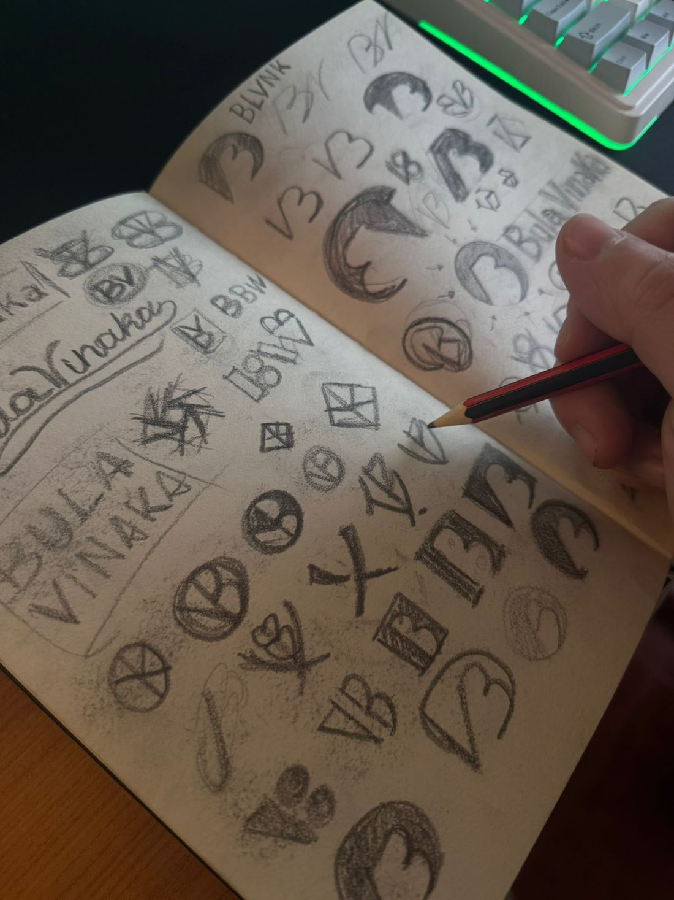

Brand identity & Logo designer
Cada marca pasa por mis manos.
Soy Julián Orlando. Hablás conmigo de principio a fin, no con un account manager ni con un equipo rotativo. Por eso cada marca tiene una mirada consistente, no un collage de decisiones de distintas personas.



01 — Cómo trabajo
Un enfoque atemporal, no una tendencia con fecha de vencimiento.
Diseño identidades visuales con un enfoque atemporal: marcas sólidas, pensadas para perdurar y mantenerse relevantes más allá de las tendencias del momento.
Mi trabajo no es solo estético, es estratégico: está construido para que cada decisión visual tenga una razón de ser.
Mi misión es ayudarte a construir una identidad visual única y estratégica que potencie y transforme tu negocio, conectando con tu audiencia de manera auténtica y efectiva.
02 — Alcance
Desde Buenos Aires, para marcas de los dos lados del Atlántico.
Trabajo hace años con marcas locales e internacionales, llevando la misma mirada estratégica a cada país en el que aterrizo. El proceso es 100% remoto, sin diferencia de calidad ni de plazos.
- ArgentinaBase · Buenos Aires
- EspañaProyecto internacional
- MéxicoProyecto internacional
- GuatemalaProyecto internacional
- ChileProyecto internacional
- UruguayProyecto internacional

03 — Trayectoria
Seis años construyendo una sola mirada.
De los primeros encargos como freelance al estudio de hoy: el mismo criterio, aplicado cada vez a más marcas y más países.
Ver los trabajos-
Hito 01 2019
Los primeros pasos
Arranco como diseñador freelance y aprendo a mirar cada marca como un problema a resolver, no como un dibujo que tiene que gustar.
-
Hito 02 2021
Cruzo la frontera
Llegan los primeros proyectos fuera de Argentina. España y Chile marcan el inicio del alcance internacional del estudio.
-
Hito 03 2023
Nace OrlandoStudio™
El freelance se vuelve estudio propio, enfocado exclusivamente en identidad visual y diseño de logotipos. Sin distraerme en disciplinas que no domino.
-
Hito 04 2026
+40 marcas después
Seis años, seis países y más de cuarenta marcas construidas. Sigo trabajando de a dos proyectos por mes para no bajar el nivel de dedicación.
04 — Detrás de escena
El proceso, antes del archivo final.
Cada marca empieza en papel: lápiz, bocetos y horas de exploración antes de tocar la pantalla.


“Recordá que tu proyecto también es mi proyecto.”
05 — Trabajemos juntos
Me comprometo a entenderlo, cuidarlo y llevarlo al siguiente nivel.
Mi prioridad es que te sientas orgulloso de cómo tu marca se presenta al mundo y que conecte de manera efectiva con tu audiencia.